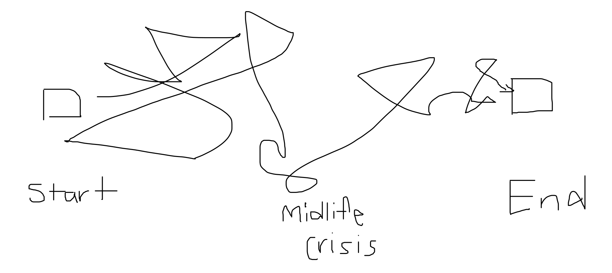
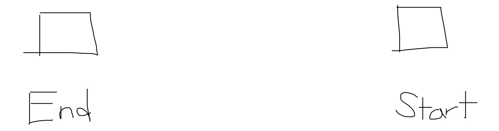
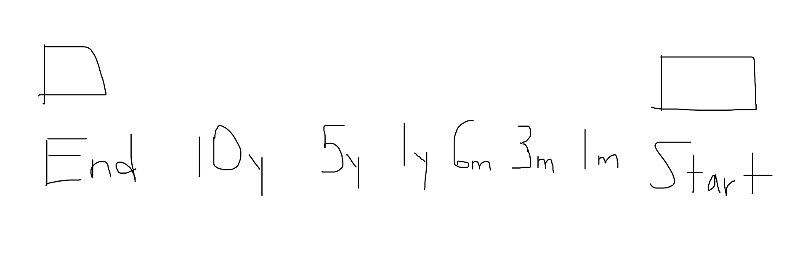

Vasili Arkhipov
I've always loved history, specifically U.S. history.
The U.S.'s history has unfolded in recent times and something interesting is always happening with the U.S.
Take October 27, 1962, for example.
This day was the peak of the Cuban Missile Crisis between the U.S. and the Soviet Union, who were in an arms race to be the world's dominant force.
A Soviet B-59 submarine was ordered to stop near an American blockade. After being spotted by American forces, the B-59 submerged themselves to conceal their presence but lost all communication in the process.
The U.S. forces tried to get the Soviets to resurface by dropping non-lethal depth charges. What the U.S. didn't know was that the B-59 had nuclear weapons that were ready to be fired under any reasonable circumstance.
The team in the B-59 was panicking.
They had no communication with their command, and the temperatures in the submarine were above 40 degrees celsius. To top it off, the Soviets feared the U.S. depth charges were the first strikes in a nuclear war.
That's when one of the Soviet captains said fuck it:
We're gonna blast them now! We will die, but we will sink them all - we will not become the shame of the fleet.
But in order to attack, he needed the B-59's other two captains to sign off. The 2nd captain said yes, the third said no.
That third captain was a man named Vasili Arkhipov, and he's the most important person in history you don't know.
Keeping a level-head, Vasili calmed down the other two captains and explained that the ship was not in danger, but being told to surface.
The B-59 resurfaced and found no nuclear war taking place. Vasili was right.
He also saved the world from WWIII, a war that probably would have ended humanity.
---
Note 1: What happened within the B-59 didn't become public knowledge until 2002 (40 years later). It makes you think about how many other stories like this we still haven't heard.
Note 2: If you're interested in U.S. history, I would recommend checking out Oliver Stone's Untold History of the United States. One of my favourite tv series.
Life is a single-player game
This tweet has been on my mind recently:
Life is a single player game.
— Naval (@naval) December 6, 2016
Initially, I saw the timestamp and wondered what made Naval tweet this at 3:17 am...
But after giving this idea some thought, I came up with my own interpretation:
Most competition is mimetic.
It's weird, but only by observing other people do we learn how and what to desire. We then will equate their desires as a necessity for survival, so we learn how to compete by imitating the people around us.
After we understand what "we" want and knowing how to compete, we will fight for the same finite resources to fulfill "our" desires.
A crude example would be a baby wanting the toy that they see another baby playing with.
So society has places to teach us how to use our mimetic nature and compete against each other. School, the corporate world, and sports are all examples of these places. But these are multi-player games. They are often zero-sum, status games, but deemed necessary by society.
Here's the problem- we make up hyper-competitive, multi-player games that don't need to exist. These games are probably made up because it's the brain's default programming to maximize one's ability to fulfill "their" desires. We think that more competitive = better ability to filter weak people and claim scarce resources.
I'll never forget when my friend told me how she was sick and missed school, so she asked one of her classmates for notes to study for a test. The girl gives my friend the notes, and they write the test. My friend fails and then finds out that the girl gave her fake notes.
Yeah, you didn't read that wrong, someone actually took the time to make fake notes and distribute them.
You really can't win these multi-player games for multiple reasons:
- There will probably always be someone better than you at the game you're playing.
- The journey to winning would probably suck. Do you really want to deal with fake notes? That's just shitty.
- Your happiness is predicated on external validators. Not sustainable or healthy.
Even if you think you've won, the saying, "play stupid games, win stupid prizes" definitely applies here.
But this is where the single-player stuff Naval talked about comes in.
I am the happiest I've ever been since I've started playing single-player games.
I believe the happiness is rooted in me doing what I want to do with incentive structures I've chosen.
A recent example of how I've been spending my time has been learning to play poker. I wanted to learn how to play because I enjoy the strategy involved and problem-solving. Status & money could be byproducts. Or maybe they won't be, doesn't really matter to me.
So the path to being happy & fulfilled looks like this for me: understanding what I want, why I want that, and just doing those things. I believe I'm ultimately responsible for my own happiness.
---
Note 1: I do think that parts of life will be co-op missions. Starting a family and raising children shouldn't be a solo game, haha.
Note 2: I would admit that what I've chosen to spend my time doing has been partially influenced by my environment. But 2 things: 1) Imitation isn't binary to me, it's a scale of how much you imitate. 2) Imitation itself isn't bad, it's really just a vehicle. I would think about how it's being used and what the incentive behind a desire is.
Goals
So recently, I've been talking to a ton of adults to understand their life aspirations. The results blew my mind.
Most of them didn't have a clear sense of what they wanted from life.
I was like what!?
I thought about why that was, and here's what I concluded: people will run the "race" of life like a chicken with their head cut off.
Based on my conversations, I've depicted how most will "run:"

Excuse my messiness, but it just doesn't make sense to me.
I had one guy tell me, word for word, "I had a midlife crisis when I was 44 because I just didn't know what I wanted and started to feel existential angst." The saying "if you don't know what you want, any path will take you there" is real.
But what if you just flipped how you thought about what you wanted in life? If you could think about what you wanted and work backwards? It would look something like this:

Hypothetically, by the time I die, I want to have:
- Travelled to 30 countries
- Start a company with a meaningful impact
- Grew a beard (mine comes in shitty, so this is a real goal haha)
I now know what the end looks like so I can work backward:

I start to have items I can do and are realistic to accomplish at each mark based on my end goals.
If I want to travel to 30 countries before I die:
- In 5 years, I will want to have gone to 5 countries.
- In 1 years, I'll have been to 1 country.
- In 6 months, I will brought a ticket for my first trip.
- In 3 months, I will be saving for my first trip.
- Finally, by the end of today (or at "start"), I will have chosen where I want to go.
The year and month benchmarks are arbitrary; you'll have to find a system that works best for you. But the idea remains the same, If you want something:
- Be able to identify what is (make the goal as measurable as possible)
- Want it badly (be relentless in achieving your goal)
- Make sure it is realistic; it would be unrealistic for me to say I want to travel to 30 countries in 1 month
Unfortunately, this system isn't as easy to implement as it sounds. Here are some things to keep in mind:
- You may not always know what you want. This week I graduated high school and was talking to people about what their plans were. Most people responded with going to university and not knowing anything beyond that. As an 18-year-old, I recognize it can be hard to understand, but what I thought was also interesting was how comfortable a lot of my friends' lives were. They didn't want to try new things or explore what they didn't know. The way I've started to develop an understanding of who I want to be has been seeking new, unique experiences. So try new stuff.
- I understand that life will be complicated and throw curveballs at you. Say in my plan to travel to a country in a year, eight months down the line, I have an emergency and can't go on the trip anymore. That doesn't mean you failed life or the system doesn't work, you adjust your goals. That's it.
- Creating a goal today doesn't mean it will still be one in 5 years. People and their subsequent goals are allowed to change and grow, so the ability to adapt will be crucial. I like to reevaluate my goals at a consistent interval to see how I'm feeling.
- Planning ≠ mitigating risk. I'd advocate doing more of the opposite. Take risks, create serendipity, and be spontaneous within your goals. What I hope to do with my goal-setting is to give myself long-term clarity. On an average day, when I wake up, I know what gets me up.
That's it. Now create expectations for yourself.